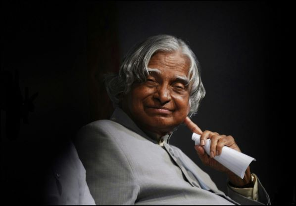

Dr. A P J Abdul Kalam – The Missile Man of India (1931-2015)

A.P.J. Abdul Kalam, the 11th President of India and a pioneer of the country's space and missile programmes, passed away on July 27, 2015.
" You cannot change your future, but you can change your habits, and surely your habits will change your future "
Timeline of Dr. Abdul Kalam's life
| 1931 : | Born Avul Pakir Jainulabdeen Abdul Kalam on October 15, in Rameswaram, Tamil Nadu. |
| 1954 : | Graduates in Physics from Saint Joseph's College, Tiruchirappalli. |
| 1960 : | Gains degree in Aeronautical Engineering from Madras Institute of Technology. |
| 1969 : | Transferred to ISRO from the DRDO. |
| 1980 : | India enters the space club by putting the Rohini satellite in the near earth orbit with the first indigenous Satellite Launch Vehicle (SLV-III), developed under the stewardship of Dr. Kalam. |
| 1980s - 1990s : | As the chief of the Integrated Guided Missile Development Programme, he was responsible for the development and operationalisation of AGNI and PRITHVI Missiles. |
| 1992 - 1999 : | works as Chief Scientific Advisor to the PM and Secretary of the DRDO. |
| 1998 : | India conducts the Pokhran II nuclear tests in May with Dr. Kalam as the chief project coordinator. |
| 1999 - 2001 : | Principal Scientific Advisor to the Government of India. |
| 2002 - 2007 : | President of India |
| 2015 : | A.P.J. Abdul Kalam passes away The 11th President of India, widely acclaimed as the "people's President", passed away on July 27, 2015 after collapsing during a lecture at the Indian Institute of Management in Shillong. |